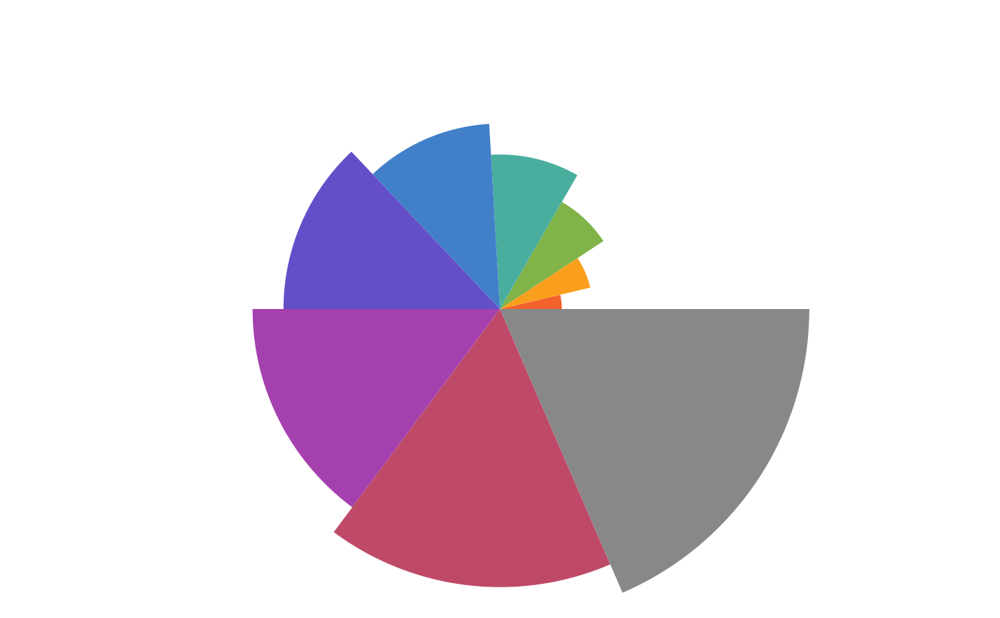

Create a pie grob
Usage
pieGrob(rads, fills = NULL, wts = NULL, name = NULL, vp = NULL, gp = NULL)
grid.pieGrob(rads, fills = NULL, wts = NULL, name = NULL, vp = NULL, gp = NULL)Arguments
- rads
Numeric, radius values for each slice from 0 to 1
- fills
Colors to fill the slices
- wts
Numeric, the relative portion of each slice
- name, vp, gp
Passed to grid::gTree
Value
pieGrob grid::grob object
Examples
library(grid)
s <- seq(0.2, 1, by = 0.1)
grid.newpage()
grid.pieGrob(rads = s)
grid.newpage()
grid.pieGrob(rads = s, wts = s)

curr_txp_fills <- options()$txp.fills
options(txp.fills = 1:8)
grid.newpage()
grid.pieGrob(rads = s)
options(txp.fills = curr_txp_fills)
## Can edit
grid.newpage()
grid.pieGrob(rads = s, name = "myPie")
 grid.ls() ## show the grid elements
#> myPie
#> slice1
#> slice2
#> slice3
#> slice4
#> slice5
#> slice6
#> slice7
#> slice8
#> slice9
grid.edit("myPie", fills = 1:9, wts = 9:1)
grid.ls() ## show the grid elements
#> myPie
#> slice1
#> slice2
#> slice3
#> slice4
#> slice5
#> slice6
#> slice7
#> slice8
#> slice9
grid.edit("myPie", fills = 1:9, wts = 9:1)